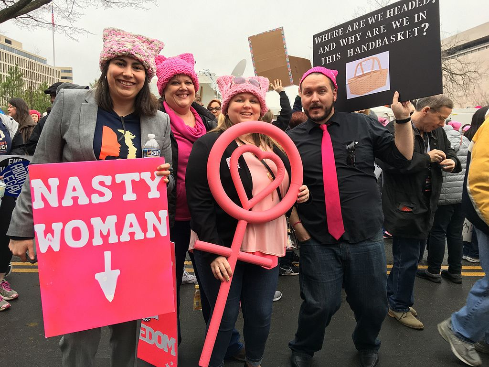
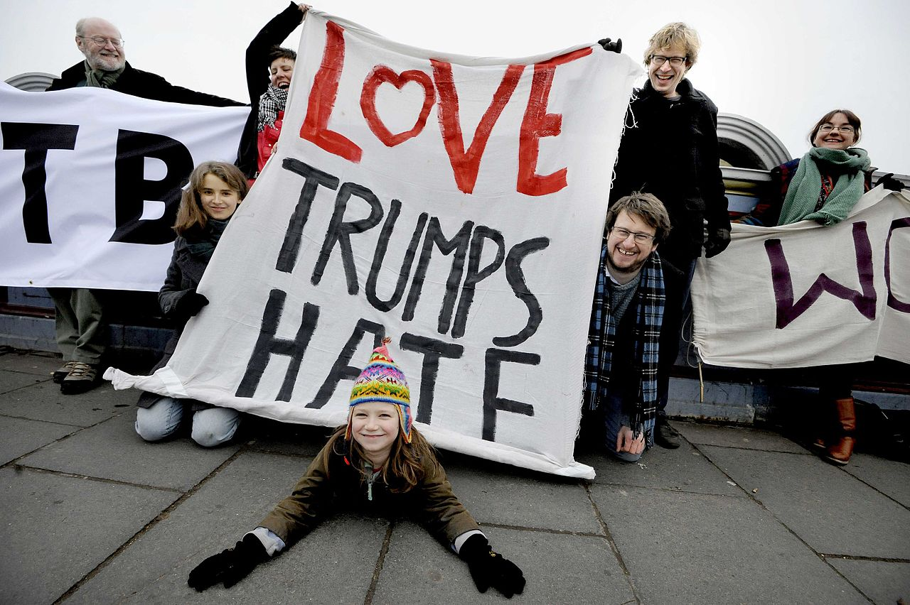

The Women's March was a worldwide protest on January 21, 2017, to advocate legislation and policies regarding human rights and other issues, including women's rights, immigration reform, healthcare reform, the natural environment, LGBTQ rights, racial equality, freedom of religion, and workers' rights. The rallies were aimed at Donald Trump, immediately following his inauguration as President of the United States, largely due to statements and positions attributed to him regarded by many as anti-women or otherwise offensive. It was the largest single-day protest in U.S. history. Worldwide participation has been estimated at five million. (source: wikipedia.org) You can read the full Women's March vision and goals document here.
 |
Crowd scientists (yeah, that's a thing!) have reported that the Women's March in Washington had three times as many people as Trump's Inauguration. They analyzed photographs and video taken of the National Mall and vicinity and estimated that there were about 160,000 people in those areas in the hour leading up to Mr. Trump's speech. They also estimated that at least 470,000 people were at the Women's March in Washington in and near the mall at about 2 p.m during the protest. Read more here. |
 |
"Women deserve to live full and healthy lives, free of violence against our bodies. One in three women have been victims of some form of physical violence by an intimate partner within their lifetime; and one in five women have been raped. Further, each year, thousands of women and girls, particularly Black, indigenous and transgender women and girls, are kidnapped, trafficked, or murdered. We honor the lives of those women who were taken before their time and we affirm that we work for a day when all forms of violence against women are eliminated." |
 |
The youngest presenter at the Washington D.C. march, 6-year-old Sophie Cruz, (an immigrants' rights activist whose parents are undocumented) said, "Let us fight with love, faith, and courage so that our families will not be destroyed," and ended her speech saying, "I also want to tell the children not to be afraid, because we are not alone. There are still many people that have their hearts filled with love. Let's keep together and fight for the rights. God is with us." Cruz repeated her speech in Spanish. |
|  | The Pussyhat Project was a nationwide effort to create pink hats to be worn at the march for visual impact. Crafters all over the US began making these hats using patterns provided on the project website. The name refers to the resemblance of the top corners of the hats to cat ears and attempts to reclaim the derogatory term "pussy", a play on Trump's widely reported 2005 remarks that women would let him "grab them by the pussy". Many of the hats worn by marchers in Washington, D.C., were created by crafters who were unable to attend, to represent their presence. |
 |
"If you are neutral in situations of injustice, you have chosen the side of the oppressor." - Desmond Tutu